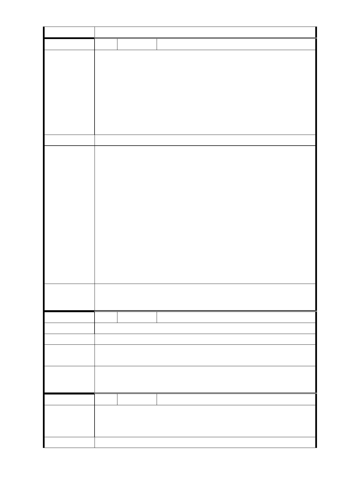

編 號 8 陳情人 谷彥璋等 5 人（R04 捷一）
小市民的心聲：
一、我們住在此地點已超過 40 年，房子早已老舊。去年郝市
長提出老舊房子都市更新計劃，大家都很高興。如今又
陳情理由
能與捷運共構，大家均樂於參與。
二、我們只要求改建後住戶所分得的實際室內坪數不得少於
原有的權狀坪數（我們最低的要求是室內一坪換一坪加
一個車位）。
三、不贊成捷運局分配的方式。
建議辦法
1.同編號 3、4、4-1 研析意見。
2.有關本開發案未來權益分配狀況會受周遭區域環境、基地
面積與完整性、使用分區、規劃產品定位及市場行情等因
素影響。故本府捷運局於說明會或座談會時預估比例係為
向地主說明之假設參考值，並非本開發案最終權益分配比
市府回應
意見
例。後續會依地主所持有土地之貢獻值與投資人所出之建
物建造成本二者做相對應之比較值，比較出來後即為所謂
的權益分配比例。未來會委託辦理土地鑑價及建造成本之
鑑定作業，依評估後之土地成本及建造成本，再與投資人
所提送之建議書做比對，將相關資料提報「臺北市臺北都
會區大眾捷運系統土地開發權益分配審議委員會」審議，
確認與投資人協商底線，俟協商確定後，方得確定權益分
配比例。
委 員 會 決 議 同「市府回應意見」。
編 號 9 陳情人 張呂春富（R04 捷一）
陳 情 理 由 不應限制捷運聯合開發硬性規定為 2 倍。
建 議 辦 法 請放寬容積管制為 2.5 倍。
市 府 回 應 同編號 3 研析意見；另容積獎勵原則涉及都市環境承載力與
意 見 本府政策，仍應依都市計畫委員會審議決議辦理。
委 員 會 決 議 同「市府回應意見」。
編 號 10 陳情人 李智堯（R04 捷一）
捷運共構於住三所分得之容積率過低，對照新北市之下，所
陳 情 理 由 得之土地小於改建前後 1 比 1 之情形，實難說服居民參與捷
運之共構。
建 議 辦 法 是否可彈性調整本建案改為商業區之可能性，本建案位於 101
- 81 -